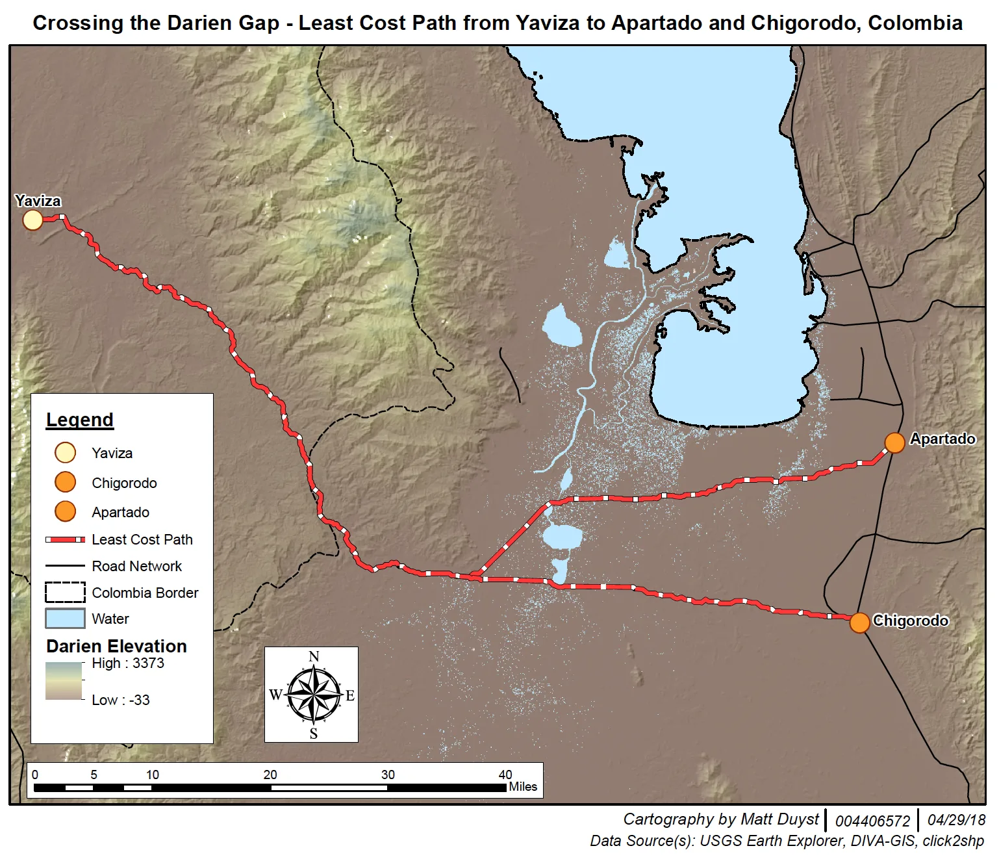
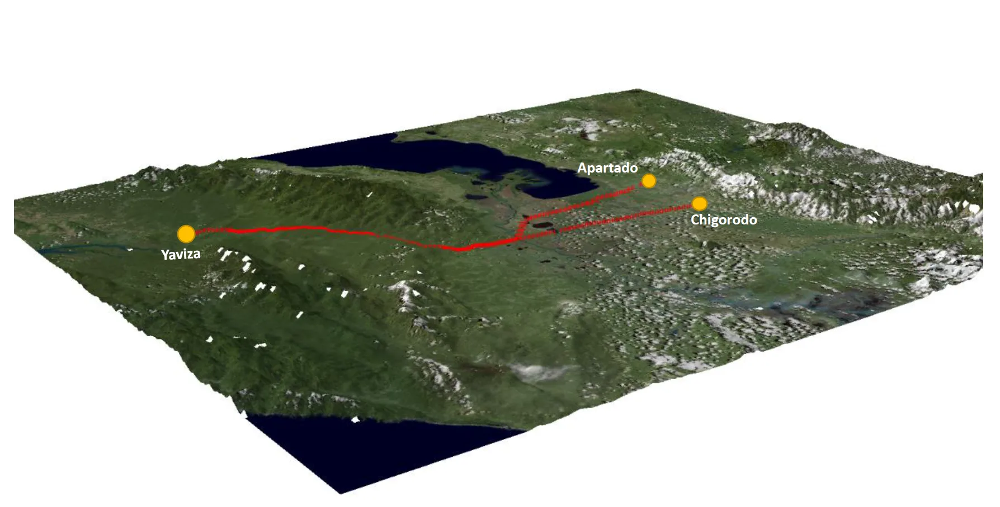

UCLA coursework, 2014 to 2018
Bridging the Darién Gap: A Cost-Distance Analysis of Yaviza to Chigorodo and Apartado
Abstract:
This study illustrates a cost-distance analysis potential to calculate the shortest (and most feasible cost affordability) from destination A to destination B. Or, in this case, an origin (Yaviza) to two countering destinations (Chigorodo and Apartado), also known as the Darién Gap in Colombia. 3 main variables were weighted when predicting the shortest path from Yaviza: total slope, amount of water present, and the flow accumulation of the present water in South America. Because these variables represent varying weights in influence — slope being weighted the highest in regard to the elevation gradient in South America — each constant was held at a different weight when calculating the path’s trajectory.
Methods:
The first map embodies the summation of this entire process: an illustration of the least cost path from an origin point (Yaviza) to two counter destination points (Chigorodo and Apartado), with consideration towards elevation terrain slope, bodies of water, and the flow accumulation of that water. The country’s border between Panama, as well as the most important road networks, are further accentuated in the map. A conglomerate of Digital Elevation Maps (4) were downloaded for the state of Colombia, and then combined into a single TIFF. A slope calculation was then run on the combined TIFF. To calculate the presence/influence of water in Colombia, a raster calculation was performed with a score of less than or equal to 0; this ultimately highlighted what was water (a score of 1) and what wasn’t water (a score of 0). The slope was then reclassified between two values — ‘Old’ (with a range of 0 to 60), and ‘New’ (with a range of 1 to 512). It is as follows below:

With this reclassification, a raster calculation was again undergone. This time, considerations for both the presence of water and the terrain slope elevation were made. The reclassified terrain slope was added to the water calculation and multiplied by a value of 128. It was decided that the flow accumulation of water was another significant value to be analyzed when deciding the least cost-effective path between the origin and two destinations. The 'Spatial Fill' button was used to find the amount of accumulated water. The direction of water was realized, and further used to calculate the total accumulation of water in Colombia. The direction of water was divided into two classes - the first being of values between 0 and 536,711, and the second being values between 536,711 and 1,631,109. The final value was found using the following raster calculation: Con(“Flow_Accumulation” >= 536,711, 1, 0).
The origin and destination points were found using an online data source (click2shp). This allowed for the cost distance between points to be made. Calculating this cost distance made finding the quickest cost path from Yaviza to Chigorodo and Apartado possible - the final product shown in both maps. This process was done for Chigorodo and Apartado separately, and then combined into a single layer. The elevation gradient for the road paths between the two destination locations was achieved through the ‘Stack Profile’ operation in the 3D Analyst toolbox. Regions with higher slopes, a more noticeable presence of water, and greater flow accumulation, are more expensive to build roads than areas where these variables are of lower values.
Least-Cost Path Analysis: Crossing the Darién Gap

The map above illustrates the most affordable method of building a road between Yaviza to Chigorodo and Apartado: where the slope is least, the presence of water is bare to minimum, and the total flow accumulation of water is marginable.
3D Rendering of Least-Cost Path

ArcScene was used for creating this map - a 2D visualization of the least cost path between the points (the static, reference map). Base Heights were altered to emphasize the presence of mountains (slope) in Colombia, as well as the bodies of water and the least-cost path. The total elevation was changed to a value of 3, and the layers were offset to a degree of 50. Lighting was heightened through the ‘3D Effects’ feature, accentuating the presence of our variables of interest.